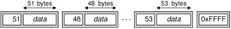

The QTcpSocket and QTcpServer classes can be used to implement TCP clients and servers. TCP is a transport protocol that forms the basis of most application-level Internet protocols, including FTP and HTTP, and that can also be used for custom protocols.
TCP is a stream-oriented protocol. For applications, the data appears to be a long stream, rather like a large flat file. The high-level protocols built on top of TCP are typically either line-oriented or block-oriented:
Line-oriented protocols transfer data as lines of text, each terminated by a newline.
Block-oriented protocols transfer data as binary data blocks. Each block consists of a size field followed by that much data.
QTcpSocket is indirectly derived from QIODevice (through QAbstractSocket), so it can be read from and written to using a QDataStream or a QTextStream. One notable difference when reading data from a network compared with reading from a file is that we must make sure that we have received enough data from the peer before we use the >> operator. Failing to do so may result in undefined behavior.
In this section, we will review the code of a client and a server that use a custom block-oriented protocol. The client, shown in Figure 15.1, is called Trip Planner and allows users to plan their next train trip. The server is called Trip Server and provides the trip information to the client. We will start by writing the Trip Planner client.
The Trip Planner provides a From field, a To field, a Date field, an Approximate Time field, and two radio buttons to select whether the approximate time is that of departure or arrival. When the user clicks Search, the application sends a request to the server, which responds with a list of train trips that match the user's criteria. The list is shown in a QTableWidget in the Trip Planner window. The very bottom of the window is occupied by a QLabel that shows the status of the last operation and a QProgressBar.
The Trip Planner's user interface was created using Qt Designer in a file called tripplanner.ui. Here, we will focus on the source code of the QDialog subclass that implements the application's functionality:
#include "ui_tripplanner.h"
class QPushButton;
class TripPlanner : public QDialog, private Ui::TripPlanner
{
Q_OBJECT
public:
TripPlanner(QWidget *parent = 0);
private slots:
void connectToServer();
void sendRequest();
void updateTableWidget();
void stopSearch();
void connectionClosedByServer();
void error();
private:
void closeConnection();
QPushButton *searchButton;
QPushButton *stopButton;
QTcpSocket tcpSocket;
quint16 nextBlockSize;
};The TripPlanner class is derived from Ui::TripPlanner (which is generated by uic from tripplanner.ui) in addition to QDialog. The tcpSocket member variable encapsulates the TCP connection. The nextBlockSize variable is used when parsing the blocks received from the server.
TripPlanner::TripPlanner(QWidget *parent)
: QDialog(parent)
{
setupUi(this);
searchButton = buttonBox->addButton(tr("&Search"),
QDialogButtonBox::ActionRole);
stopButton = buttonBox->addButton(tr("S&top"),
QDialogButtonBox::ActionRole);
stopButton->setEnabled(false);
buttonBox->button(QDialogButtonBox::Close)->setText(tr("&Quit"));
QDateTime dateTime = QDateTime::currentDateTime();
dateEdit->setDate(dateTime.date());
timeEdit->setTime(QTime(dateTime.time().hour(), 0));
progressBar->hide();
progressBar->setSizePolicy(QSizePolicy::Preferred,
QSizePolicy::Ignored);
tableWidget->verticalHeader()->hide();
tableWidget->setEditTriggers(QAbstractItemView::NoEditTriggers);
connect(searchButton, SIGNAL(clicked()),
this, SLOT(connectToServer()));
connect(stopButton, SIGNAL(clicked()), this, SLOT(stopSearch()));
connect(buttonBox, SIGNAL(rejected()), this, SLOT(reject()));
connect(&tcpSocket, SIGNAL(connected()), this, SLOT(sendRequest()));
connect(&tcpSocket, SIGNAL(disconnected()),
this, SLOT(connectionClosedByServer()));
connect(&tcpSocket, SIGNAL(readyRead()),
this, SLOT(updateTableWidget()));
connect(&tcpSocket, SIGNAL(error(QAbstractSocket::SocketError)),
this, SLOT(error()));
}
In the constructor, we initialize the date and time editors based on the current date and time. We also hide the progress bar, because we want to show it only when a connection is active. In Qt Designer, the progress bar's minimum and maximum properties were both set to 0. This tells the QProgressBar to behave as a busy indicator instead of as a standard percentage-based progress bar.
Also in the constructor, we connect the QTcpSocket's connected(), disconnected(), readyRead(), and error(QAbstractSocket::SocketError) signals to private slots.
void TripPlanner::connectToServer()
{
tcpSocket.connectToHost("tripserver.zugbahn.de", 6178);
tableWidget->setRowCount(0);
searchButton->setEnabled(false);
stopButton->setEnabled(true);
statusLabel->setText(tr("Connecting to server..."));
progressBar->show();
nextBlockSize = 0;
}The connectToServer() slot is executed when the user clicks Search to start a search. We call connectToHost() on the QTcpSocket object to connect to the server, which we assume is accessible at port 6178 on the fictitious host tripserver.zugbahn.de. (If you want to try the example on your own machine, replace the host name with QHostAddress::LocalHost.) The connectToHost() call is asynchronous; it always returns immediately. The connection is typically established later. The QTcpSocket object emits the connected() signal when the connection is up and running, or error(QAbstractSocket::SocketError) if the connection failed.
Next, we update the user interface, in particular making the progress bar visible.
Finally, we set the nextBlockSize variable to 0. This variable stores the length of the next block received from the server. We have chosen to use the value of 0 to mean that we don't yet know the size of the next block.
void TripPlanner::sendRequest()
{
QByteArray block;
QDataStream out(&block, QIODevice::WriteOnly);
out.setVersion(QDataStream::Qt_4_3);
out << quint16(0) << quint8('S') << fromComboBox->currentText()
<< toComboBox->currentText() << dateEdit->date()
<< timeEdit->time();
if (departureRadioButton->isChecked()) {
out << quint8('D');
} else {
out << quint8('A');
}
out.device()->seek(0);
out << quint16(block.size() - sizeof(quint16));
tcpSocket.write(block);
statusLabel->setText(tr("Sending request..."));
}The sendRequest() slot is executed when the QTcpSocket object emits the connected() signal, indicating that a connection has been established. The slot's task is to generate a request to the server, with all the information entered by the user.
The request is a binary block with the following format:
We first write the data to a QByteArray called block. We can't write the data directly to the QTcpSocket because we won't know the size of the block, which must be sent first, until after we have put all the data into the block.
We initially write 0 as the block size, followed by the rest of the data. Then we call seek(0) on the I/O device (a QBuffer created by QDataStream behind the scenes) to move back to the beginning of the byte array, and overwrite the initial 0 with the size of the block's data. The size is calculated by taking the block's size and subtracting sizeof(quint16) (i.e., 2) to exclude the size field from the byte count. After that, we call write() on the QTcpSocket to send the block to the server.
void TripPlanner::updateTableWidget()
{
QDataStream in(&tcpSocket);
in.setVersion(QDataStream::Qt_4_3);
forever {
int row = tableWidget->rowCount();
if (nextBlockSize == 0) {
if (tcpSocket.bytesAvailable() < sizeof(quint16))
break;
in >> nextBlockSize;
}
if (nextBlockSize == 0xFFFF) {
closeConnection();
statusLabel->setText(tr("Found %1 trip(s)").arg(row));
break;
}
if (tcpSocket.bytesAvailable() < nextBlockSize)
break;
QDate date;
QTime departureTime;
QTime arrivalTime;
quint16 duration;
quint8 changes;
QString trainType;
in >> date >> departureTime >> duration >> changes >> trainType;
arrivalTime = departureTime.addSecs(duration * 60);
tableWidget->setRowCount(row + 1);
QStringList fields;
fields << date.toString(Qt::LocalDate)
<< departureTime.toString(tr("hh:mm"))
<< arrivalTime.toString(tr("hh:mm"))
<< tr("%1 hr %2 min").arg(duration / 60)
.arg(duration % 60)
<< QString::number(changes)
<< trainType;
for (int i = 0; i < fields.count(); ++i)
tableWidget->setItem(row, i,
new QTableWidgetItem(fields[i]));
nextBlockSize = 0;
}
}
The updateTableWidget() slot is connected to the QTcpSocket's readyRead() signal, which is emitted whenever the QTcpSocket has received new data from the server. The server sends us a list of possible train trips that match the user's criteria. Each matching trip is sent as a single block, and each block starts with a size. Figure 15.2 illustrates a stream of such blocks. The forever loop is necessary because we don't necessarily get one block of data from the server at a time.[*] We might have received an entire block, or just part of a block, or one and a half blocks, or even all of the blocks at once.
[*] The forever keyword is provided by Qt. It simply expands to for (;;).

So, how does the forever loop work? If the nextBlockSize variable is 0, this means that we have not read the size of the next block. We try to read it (assuming that at least 2 bytes are available for reading). The server uses a size value of 0xFFFF to signify that there is no more data to receive, so if we read this value, we know that we have reached the end.
If the block size is not 0xFFFF, we try to read in the next block. First, we check to see whether there are block size bytes available to read. If there are not, we stop there for now. The readyRead() signal will be emitted again when more data is available, and we will try again then.
Once we are sure that an entire block has arrived, we can safely use the >> operator on the QDataStream to extract the information related to a trip, and we create QTableWidgetItems with that information. A block received from the server has the following format:
| quint16 | Block size in bytes (excluding this field) |
| QDate | Departure date |
| QTime | Departure time |
| quint16 | Duration (in minutes) |
| quint8 | Number of changes |
| QString | Train type |
At the end, we reset the nextBlockSize variable to 0 to indicate that the next block's size is unknown and needs to be read.
void TripPlanner::closeConnection()
{
tcpSocket.close();
searchButton->setEnabled(true);
stopButton->setEnabled(false);
progressBar->hide();
}The closeConnection() private function closes the connection to the TCP server and updates the user interface. It is called from updateTableWidget() when the 0xFFFF is read and from several other slots that we will cover shortly.
void TripPlanner::stopSearch()
{
statusLabel->setText(tr("Search stopped"));
closeConnection();
}The stopSearch() slot is connected to the Stop button's clicked() signal. Essentially, it just calls closeConnection().
void TripPlanner::connectionClosedByServer()
{
if (nextBlockSize != 0xFFFF)
statusLabel->setText(tr("Error: Connection closed by server"));
closeConnection();
}The connectionClosedByServer() slot is connected to QTcpSocket's disconnected() signal. If the server closes the connection and we have not yet received the 0xFFFF end-of-data marker, we tell the user that an error occurred. We call closeConnection() as usual to update the user interface.
void TripPlanner::error()
{
statusLabel->setText(tcpSocket.errorString());
closeConnection();
}The error() slot is connected to QTcpSocket's error(QAbstractSocket::SocketError) signal. We ignore the error code and instead use the QIODevice::errorString() function, which returns a human-readable error message for the last error that occurred.
This is all for the TripPlanner class. The main() function for the Trip Planner application looks just as we would expect:
int main(int argc, char *argv[])
{
QApplication app(argc, argv);
TripPlanner tripPlanner;
tripPlanner.show();
return app.exec();
}Now let's implement the server. The server consists of two classes: TripServer and ClientSocket. The TripServer class is derived from QTcpServer, a class that allows us to accept incoming TCP connections. ClientSocket reimplements QTcpSocket and handles a single connection. At any one time, there are as many ClientSocket objects in memory as there are clients being served.
class TripServer : public QTcpServer
{
Q_OBJECT
public:
TripServer(QObject *parent = 0);
private:
void incomingConnection(int socketId);
};The TripServer class reimplements the incomingConnection() function from QTcpServer. This function is called whenever a client attempts to connect to the port the server is listening to.
TripServer::TripServer(QObject *parent)
: QTcpServer(parent)
{
}The TripServer constructor is trivial.
void TripServer::incomingConnection(int socketId)
{
ClientSocket *socket = new ClientSocket(this);
socket->setSocketDescriptor(socketId);
}In incomingConnection(), we create a ClientSocket object as a child of the TripServer object, and we set its socket descriptor to the number provided to us. The ClientSocket object will delete itself automatically when the connection is terminated.
class ClientSocket : public QTcpSocket
{
Q_OBJECT
public:
ClientSocket(QObject *parent = 0);
private slots:
void readClient();
private:
void generateRandomTrip(const QString &from, const QString &to,
const QDate &date, const QTime &time);
quint16 nextBlockSize;
};The ClientSocket class is derived from QTcpSocket and encapsulates the state of a single client.
ClientSocket::ClientSocket(QObject *parent)
: QTcpSocket(parent)
{
connect(this, SIGNAL(readyRead()), this, SLOT(readClient()));
connect(this, SIGNAL(disconnected()), this, SLOT(deleteLater()));
nextBlockSize = 0;
}In the constructor, we establish the necessary signal–slot connections, and we set the nextBlockSize variable to 0, indicating that we do not yet know the size of the block sent by the client.
The disconnected() signal is connected to deleteLater(), a QObject-inherited function that deletes the object when control returns to Qt's event loop. This ensures that the ClientSocket object is deleted when the socket connection is closed.
void ClientSocket::readClient()
{
QDataStream in(this);
in.setVersion(QDataStream::Qt_4_3);
if (nextBlockSize == 0) {
if (bytesAvailable() < sizeof(quint16))
return;
in >> nextBlockSize;
}
if (bytesAvailable() < nextBlockSize)
return;
quint8 requestType;
QString from;
QString to;
QDate date;
QTime time;
quint8 flag;
in >> requestType;
if (requestType == 'S') {
in >> from >> to >> date >> time >> flag;
std::srand(from.length() * 3600 + to.length() * 60
+ time.hour());
int numTrips = std::rand() % 8;
for (int i = 0; i < numTrips; ++i)
generateRandomTrip(from, to, date, time);
QDataStream out(this);
out << quint16(0xFFFF);
}
close();
}
The readClient() slot is connected to QTcpSocket's readyRead() signal. If nextBlockSize is 0, we start by reading the block size; otherwise, we have already read it, and instead we check to see whether a whole block has arrived. Once an entire block is ready for reading, we read it in one go. We use the QDataStream directly on the QTcpSocket (the this object) and read the fields using the >> operator.
Once we have read the client's request, we are ready to generate a reply. If this were a real application, we would look up the information in a train schedule database and try to find matching train trips. But here we will be content with a function called generateRandomTrip() that will generate a random trip. We call the function a random number of times, and then we send 0xFFFF to signify the end of the data. At the end, we close the connection.
void ClientSocket::generateRandomTrip(const QString & /* from */,
const QString & /* to */, const QDate &date, const QTime &time)
{
QByteArray block;
QDataStream out(&block, QIODevice::WriteOnly);
out.setVersion(QDataStream::Qt_4_3);
quint16 duration = std::rand() % 200;
out << quint16(0) << date << time << duration << quint8(1)
<< QString("InterCity");
out.device()->seek(0);
out << quint16(block.size() - sizeof(quint16));
write(block);
}The generateRandomTrip() function shows how to send a block of data over a TCP connection. This is very similar to what we did in the client in the sendRequest() function (p. 374). Once again, we write the block to a QByteArray so that we can determine its size before we send it using write().
int main(int argc, char *argv[])
{
QApplication app(argc, argv);
TripServer server;
if (!server.listen(QHostAddress::Any, 6178)) {
std::cerr << "Failed to bind to port" << std::endl;
return 1;
}
QPushButton quitButton(QObject::tr("&Quit"));
quitButton.setWindowTitle(QObject::tr("Trip Server"));
QObject::connect(&quitButton, SIGNAL(clicked()),
&app, SLOT(quit()));
quitButton.show();
return app.exec();
}In main(), we create a TripServer object and a QPushButton that enables the user to stop the server. We start the server by calling QTcpSocket::listen(), which takes the IP address and port number on which we want to accept connections. The special address 0.0.0.0 (QHostAddress::Any) signifies any IP interface present on the local host.
Using a QPushButton to represent the server is convenient during development. However, a deployed server would be expected to run without a GUI, as a Windows service or as a Unix daemon. Trolltech provides a commercial add-on for this purpose, called QtService.
This completes our client–server example. In this case, we used a block-oriented protocol that allows us to use QDataStream for reading and writing. If we wanted to use a line-oriented protocol, the simplest approach would be to use QTcpSocket's canReadLine() and readLine() functions in a slot connected to the readyRead() signal:
QStringList lines;
while (tcpSocket.canReadLine())
lines.append(tcpSocket.readLine());We would then process each line that has been read. As for sending data, that can be done using a QTextStream on the QTcpSocket.
The server implementation that we have used doesn't scale very well when there are lots of connections. The problem is that while we are processing a request, we don't handle the other connections. A more scalable approach would be to start a new thread for each connection. The Threaded Fortune Server example located in Qt's examples/network/threadedfortuneserver directory illustrates how to do this.